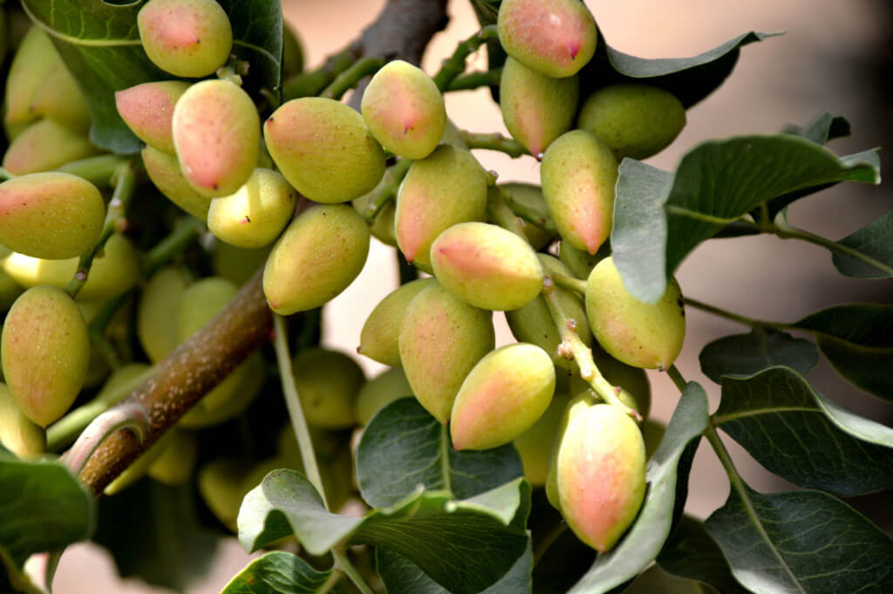

Pistachios are kind of small and slow-growing trees from the Pistachio family. They are originated in middle-east and Asia. Historically it is believed that pistachios trees were grown in Iran for the first time. Iran is also one of the main producers and exporters of pistachio worldwide. Pistachio growing is kind of technical activity that need enough information to succeed in harvesting most and best crops.
How to grow pistachios?
